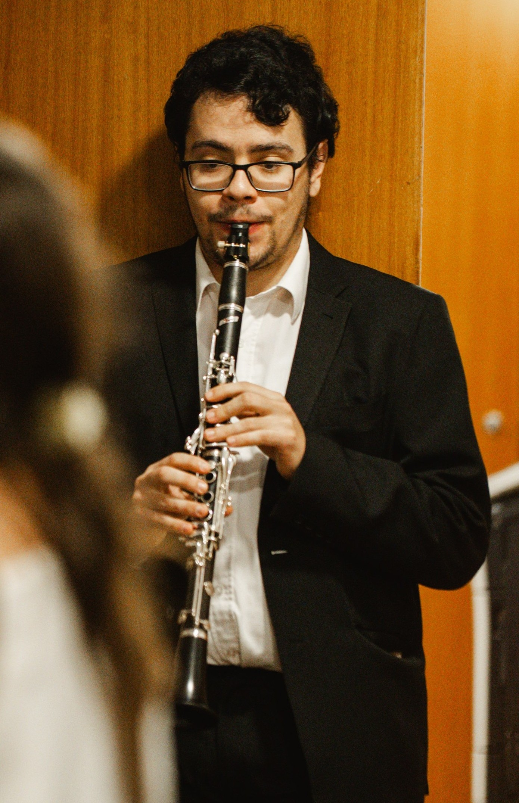

Música desenhada para contar histórias.
Não me prendo a géneros ou rótulos. Escrevo música com base na liberdade criativa: desde a densidade de peças orquestrais até à sensibilidade moderna de uma banda sonora.
Ver TrabalhoSobre Mim
Criar música, para mim, nunca foi uma questão de escolher um só caminho. Longe de me fechar numa única gaveta ou estilo tradicional, encaro a composição como um campo aberto onde tudo se pode cruzar — as heranças clássicas, as texturas contemporâneas e a força visual do som.
Ler Biografia Completa
O que Desenvolvo
Composições Originais
Peças construídas de raiz para múltiplos géneros, ensembles ou orquestras.
Arranjos & Orquestração
Adaptação de temas existentes para novas realidades instrumentais.
Música para Imagem
Bandas sonoras e ambientes imersivos para cinema e meios digitais.
Outros Projetos
Exploração sem barreiras: bandas e conceitos musicais alternativos.
Vamos Colaborar?
Tem um projeto em mente? Fique a par de todos os meios para falar comigo diretamente.
Entrar em Contacto